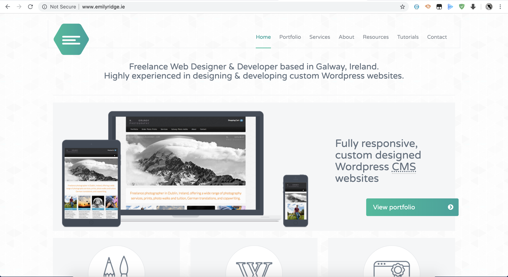
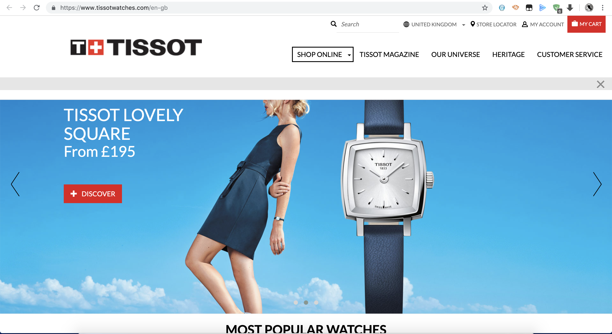
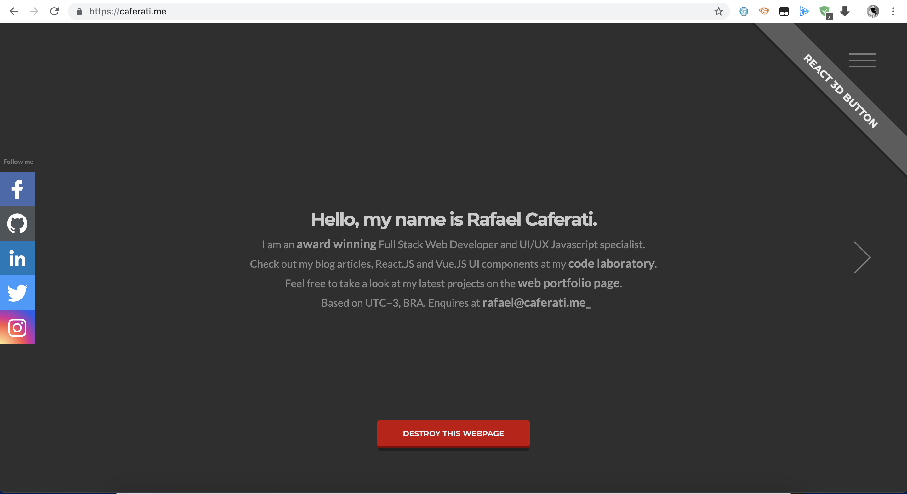
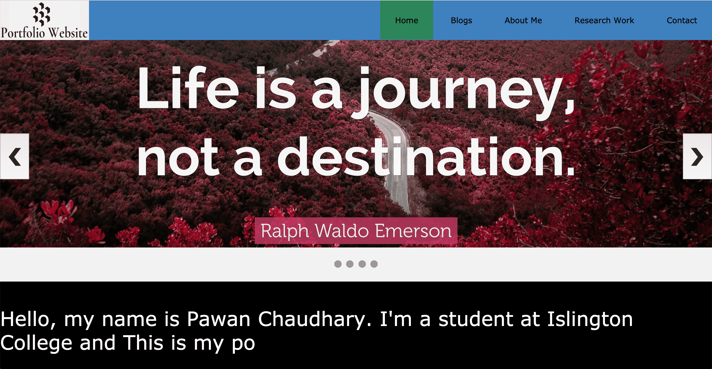
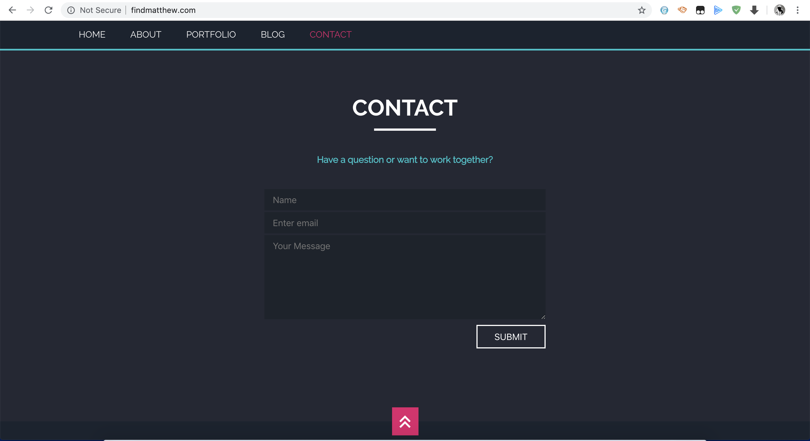
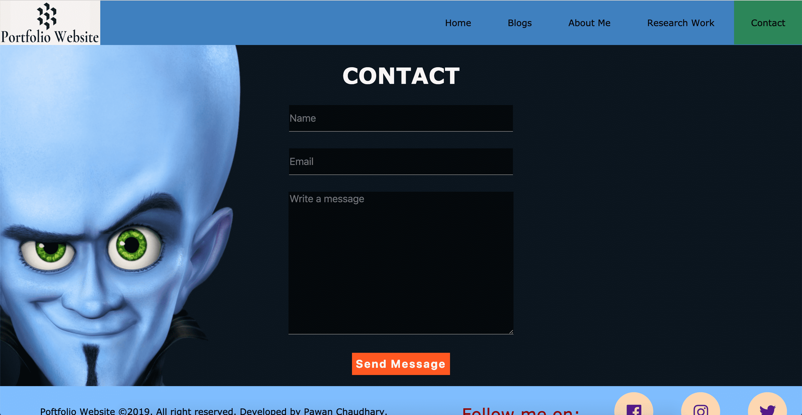
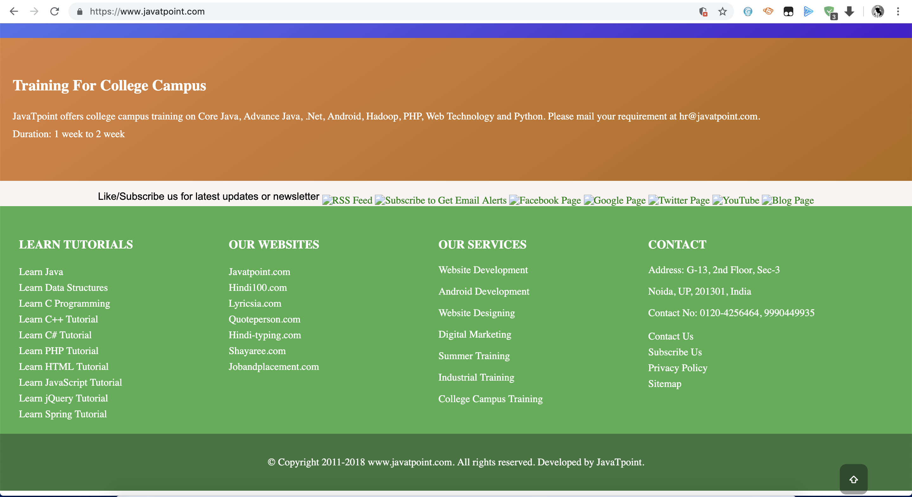
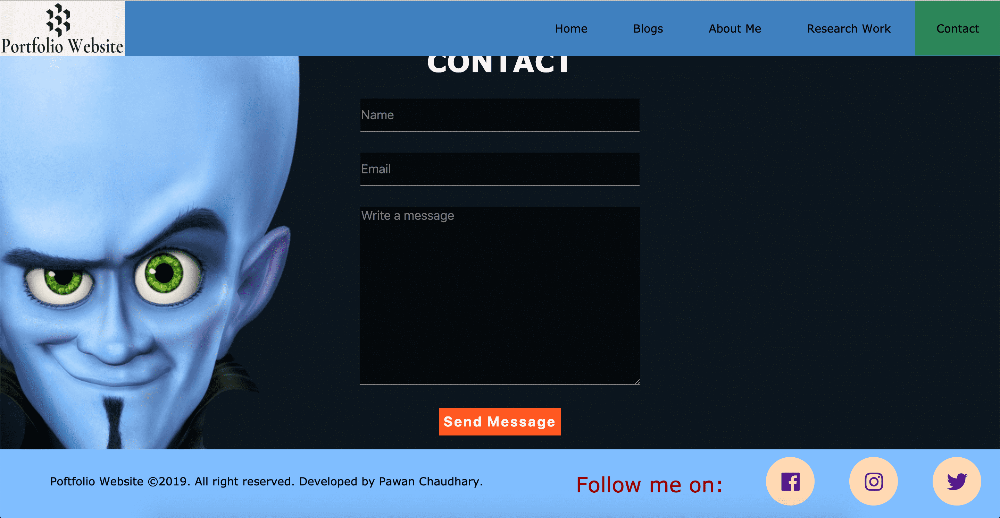
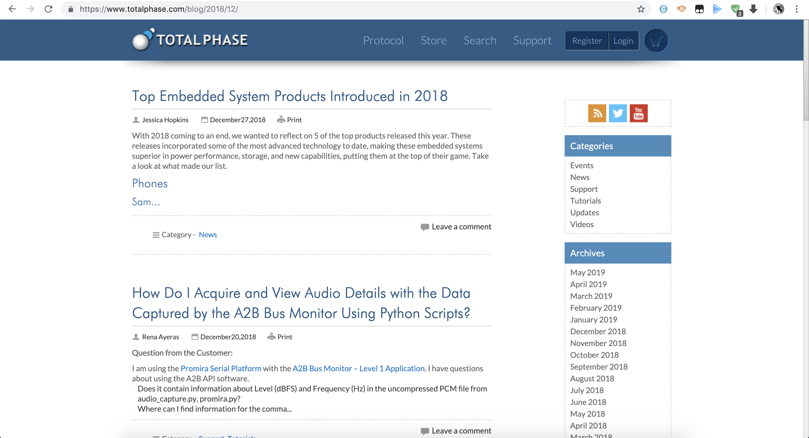
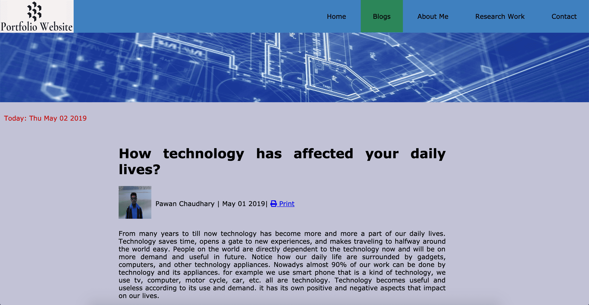

This portfolio website is the assignment of our coursework. I visited different websites and gained ideas to use web components in webpage. Some of the websites that helped to create this portfolio website are as follow:
| S.N | Reference Website | Description |
|---|---|---|
| 1. |  | When I'm searching for way of using web components in a webpage then i found this portfolio website very first time whose way of styling navigation bar and logo position attracted me. I thought i should use this style of navigation bar and logo position in my protfolio website.By visiting this website i got different idea to create portfolio website and way of locating web components in a webpage. This website consists different web components which should be in a portfolio website among them I liked its way of styling navigation bar and logo position. This was first website from which i got different idea to locate web component and this is a first website from which i took reference and begun to create website and used its styling of navigation bar in my own way. |
| 2. |  | I used to visit this website for the review of tissot watches. when i'm searching for the components to my website then i thought the idea of slide show at a home page is also a way to creating website attractive which i found in this website. By taking reference from this website of slide show style i tried to create attractive slide as much as possible and created slide show in my website in my own style. |
| 3. |  URL: https://caferati.me/ |
 While i'm searching for the attractive website, i found this website. The way of introducing in this website by typing made me very attractive and i thought why not i should kept this style to introduce the webpage by typing in my website. Also i thought i should keep this at my home page with slide show which will be good combo of creating website attractive. I successfully kept typing text style in my website but in different way of typing from this website. This website is also one of those website which i'm inspired to use web component in properly. |
| 4. |  |  When i'm searching for portfolio website to learn how web components are placed and what should be the correct way of creating web page then i found this website. when i saw its contact page, i'm very impressed by its contact page and i thought contact page also should be in our portfolio website so i created my contact page by taking the reference from this website and i also found the sticky navigation bar in this website and i thought sticky navigation bar is also the way of creating website attractive also which i'm inspired from this website. |
| 5. |  |  I used to visit this website when i want to learn syntax and methods of java for the programming module. when i saw the footer of this website, i liked its way of writing copyright text and footer also so i take its footer style as an reference to my portfolio website. I take it footer as an reference and also include some other component to my website's footer which i thought that will be better to my website. |
| 6. |  |  When im searching for how to write a blog on a website in different websites then i found this website whose style of writing blogs impressed me and from this website i get idea how to locate author name, date of blog and printing style. This website aslo help me to use javascript on my website i.e printing method. |